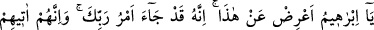
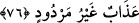

ötekine acımamaları söz konusu olmaz. Çünkü bir peygamberin nazarında ümmeti,
babanın nazarında çocukları gibidir. Ümmetlerin inkârı peygamberlerinin kendileri
hakkındaki acıma hissini ortadan kaldırmaz. Nûh (a.s.)’ın oğlu Ken’ân ile olan durumu
da buna delâlet ediyor. Bu konuya yukarıda vâkıf olmuştunuz. Buradaki müjdenin gelişi,
sadece kendi kavmiyle ilgilidir. Dolayısıyla yine o kendi kavmi dışındakilerin
durumuna elem duymaktadır. İbrahim (a.s.)’la Lût (a.s.) arasındaki akrabalık, Lût
kavminin de İbrahim kavmine dahil olmasını gerektirir.
76. (Melekler dediler ki:) “Ey İbrâhim, bundan vazgeç. Çünkü Rabb’inin emri
gelmiştir. Ve onlara, geri çevrilmez azap mutlaka gelecektir!”
Melekler dediler ki: “Ey İbrâhim, bundan” yani acınmaya lâyık olmayanlara acıman
ve yumuşak huyluluğun sebebiyle girdiğin bu tartışmadan “vazgeç. Çünkü” durum şudur
ki “Rabb’inin emri” yani azâba uğratılacaklarına dâir ezelî hükmü gereğince takdiri
“gelmiştir.” Allah bunların durumunu çok daha iyi bilmektedir.
Kazâ tüm varlıkların kendilerine has bir tertip üzere belirli bir nizam dahilinde
hareket etmelerini gerektiren ilâhî inâyet ve ezelî irâdedir. Kader ise bu iradenin
varlıklara tam zamanında taalluk etmesi demektir.
“Ve” ne tartışma ne duâ ne de başka bir şeyle onlardan kaldırılmayacak olan “onlara,
geri çevrilmez azap mutlaka gelecektir!” Sen ise onların kurtulması için yaptığın bu
tartışmadan dolayı sevap ve ecrini alacaksın. Nitekim Hz. Peygamber (s.a.) şöyle
buyuruyor: “Şefaat edip, yani aracı olup ecir kazanın. Allah da Rasulünün diliyle
dilediğine hükmetsin.”[155]
Bu hadisin şerhinde İbnü’l-Melek şöyle der: “Açıktır ki mutlak mânâda şefaatçi,
aracı olmak ecir kazanmayı gerektirmez. Dolayısıyla hadisteki aracı olma, bir haksızlığı
def etmek ve haddi gerektirmeyen günahlarda olduğu gibi bir takım meşrû ihtiyaç
sahiplerine aracı olma mânâsına hamledilmelidir.”
İmameyn’e göre livâtada had uygulanması vacibdir. Çünkü onlar livâtayı zinâ ile aynı
görmüşlerdir. Zâhirü’r-rivâye kitaplarında belirtildiği gibi Ebû Hanife’ye göre livâta
edenlere tâzir cezası uygulanır. el-Câmi’s-Sağir’de bu cezâya “tevbe edinceye kadar
hapse atılır” şeklinde bir ilâve de yapılmıştır.
Fakir (Bursevî) der ki: “Şurası açıktır ki Lût kavminin geri çevrilmez azâba duçâr
olmaları, sırf hak açıkça ortaya çıktığı halde inkâr ve yalanlamada hâlâ ısrar
etmelerinden kaynaklanmıştı. Livâta ise tıpkı Salih (a.s.)’ın kavminin Allah’ın devesini
kesmeleri gibi azâbın gelmesine sebep olan hâdiselerden biridir.